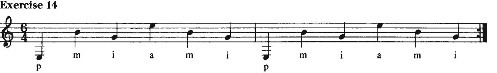

Lesson 2
Wei Wang
Created: 2024-02-24 Sat 18:33
Warm up
- Ladder climbing on string 4, 3, 2
- Spider walk at fret 5 with two fingers
- Spider walk at fret 5 with four fingers
- Chromatic scales (maybe skip)
Arpeggios with p, m, i
- Test Carcassi arpeggios 1-5, may leave it to future lesson if too too difficult

Noad exercise 12-13
Noad exercise 14-15


Sight reading on open strings
- pg 17, exercise 5-13, take odd number, and leave even number to student at home
- Set metronome to 120, use X% to control tempo
- always practice with tempo that you can control:
C Scales

Music: Spagnoletta (original)
Music: Spagnoletta (for two guitars)

Music from Carcassi book: Andantino

Music from Carcassi book: Waltz